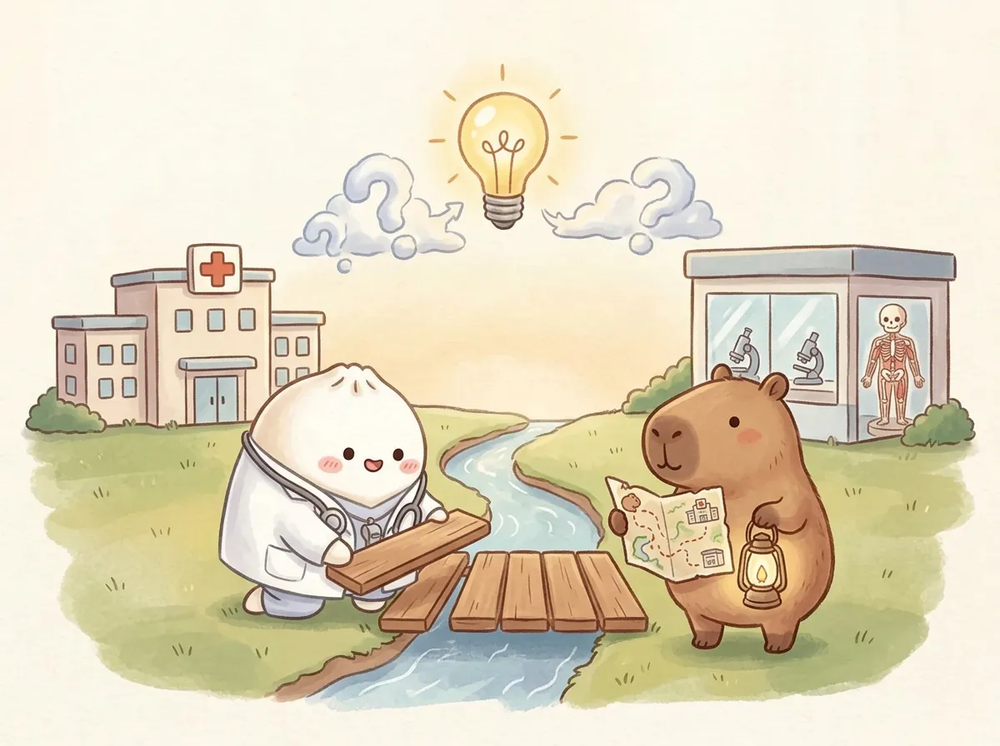
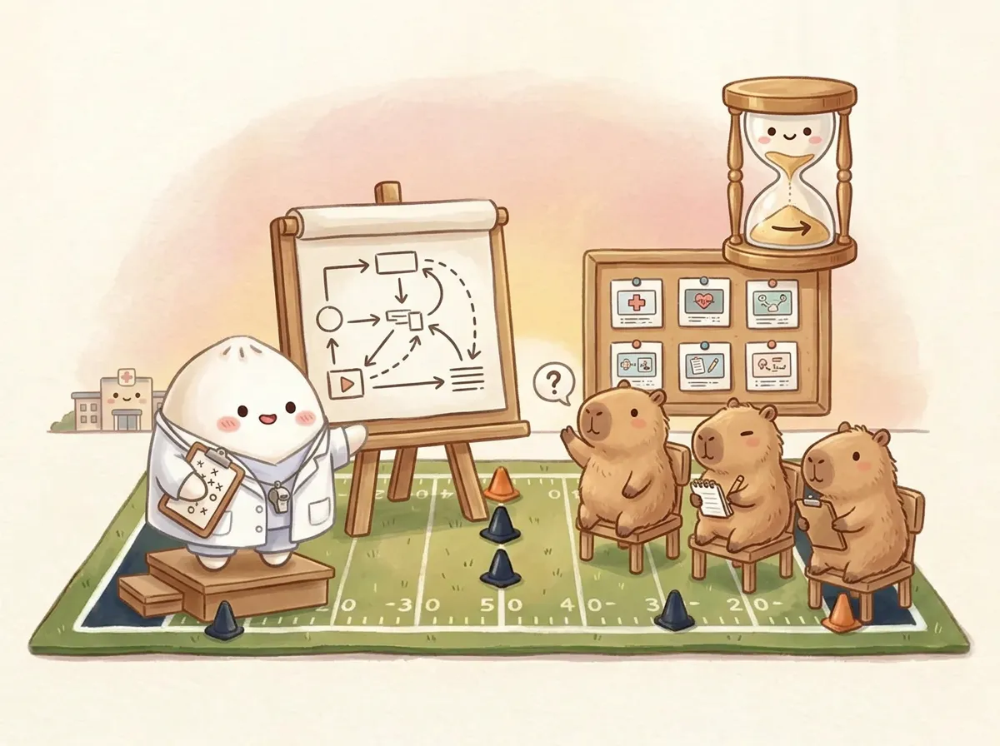
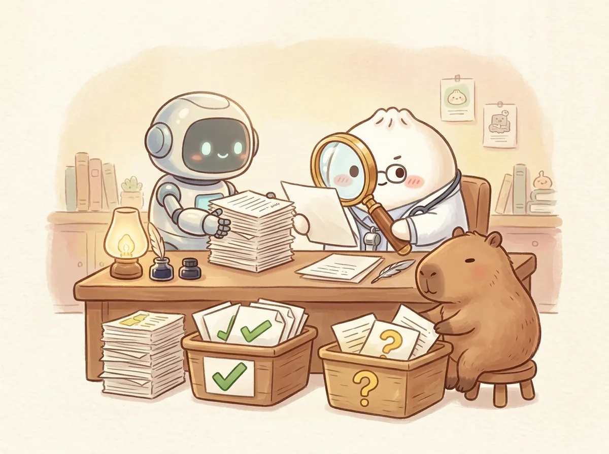

人工智能学院· 实战案例 02 博士申请
人工智能学院· 实战案例 02 博士申请从急诊室到博士录取：
一位临床医生的申请路线图
英语、研究方向、面试 PPT、医学英语、录取衔接
一句话：把真实的临床经历，一站一站压缩成考官 8 分钟能听懂的研究故事
六站路线
| 站 | 时间 | 我要解决的问题 | AI 的角色 |
|---|---|---|---|
| 英语 | 5 月中下旬 | 在限定时间写出结构清楚、用词准确的作文 | 拆范文结构、改表达 |
| 方向 | 5 月下旬 | 在自己的临床背景和导师方向之间找到交点 | 按意义、证据、可行性排队 |
| PPT | 6 月初 | 9 页、7–8 分钟讲清楚“为什么是我” | 压缩要点、写口述稿初稿 |
| 面试 | 6 月上旬 | 读懂、说出医学英语，接住追问 | 出练习题、扮演考官 |
| 录取 | 6 月下旬 | 确认录取 | — |
| 衔接 | 7 月 | 培养安排、工作协调、进实验室 | 列清单、拟沟通措辞 |
值得学
- 给每个环节设硬约束：页数、时长、题型
- 机制图用实线、虚线分开证据和假说
- 任务切小再交给 AI：一段、一页、一组词
要警惕
- AI 写得流畅，不等于内容对
- 研究计划不能讲成已有成果
- 练习题不是真题，往年经验不是今年政策
经历不缺，难的是把经历组织成一份申请，并在有限时间里讲清楚自己
一边临床，一边准备
- 急诊创伤外科，排班不固定
- 能用于备考的整块时间很少
- 所以每一站都要先定范围、再动手
经历多，但是散的
- 临床、教学、科研碎片分在不同年份
- 需要按“临床 / 科研 / 教学 / 缺口”重新归类
- 每一条都要拿得出证明
考官真正想知道的
- 你的临床问题是什么，有没有意义
- 在这个平台上做不做得成
- 你有没有时间、能力真正做研究
读法提示：后面每一站都按同一个顺序讲——我要解决什么 → 我自己做了什么 → AI 帮了什么 → 要小心什么。听众可以把自己的情况套进同一张表。
5 月到 7 月：先过英语，再定方向，最后把一切压进 8 分钟
难的不是单词量，而是在限定时间里写出结构清楚、用词准确的作文
示意图（AI 生成）：团子备考，卡皮巴拉当陪练老师。
先弄清题型
我报考那年考词汇、完形、阅读和写作，没有听力。题型决定时间怎么分，先确认再动手。
我自己做的
找齐近几年的作文题和范文；自己先写，再拿去对照；把常用医学词汇单独成表。
AI 帮的忙
归纳范文的段落结构；把复杂句改成“简单但准确”的表达；整理高频医学词汇。
要小心
别让 AI“写一篇给我背”。把任务切小，让它分析你写的东西。它整理的结构不是官方评分标准，医学概念也要自己核对。
在“我每天看到的病人”和“导师在做的研究”之间，搭一座讲得清楚的桥

示意图（AI 生成）：一边是医院，一边是实验室。
两头各是什么
我做急诊创伤外科；报考的课题组研究骨质疏松、肌少症、肌腱衰老一类问题。任务是找一个有临床意义、在这个平台做得成的问题。
我自己做的
梳理导师组公开的研究方向；把自己的临床背景放在旁边逐条对照；决定哪个问题值得讲、讲到什么程度。
AI 帮的忙
把候选问题按临床意义、已有证据、实验可行性排队；指出“这里还没有证据”；给检索方向，原文我自己去查。
红线
研究计划说的是“准备怎么做”，不是“已经做出了什么”。参考别人的机制、团队已有的基础、自己的设想，三者分开写。
9 页、7–8 分钟：限制越死，越逼着每一页只回答一个问题

示意图（AI 生成）：限时彩排，观众随时举手提问。
硬约束
9 页、7–8 分钟、16:9。6 月初开始反复修改，约一周。
我自己做的
定页数、定时长、定每页要回答的问题；决定哪些经历放、哪些删；补上研究优势、临床资源和四年学习计划。
AI 帮的忙
把散乱材料压成每页最多 3 个要点；写口述稿初稿，我再改成自己的话；按我的要求区分实线证据和虚线假说。
最想推荐的细节
机制示意图里，有证据的画实线，待验证的画虚线。考官一眼就能看出你分得清事实和设想（下一页示范）。
一张图讲清楚：哪些是已知，哪些是我准备去验证的
实线框
每个框都能说出一篇原文或一项数据。说不出来，就降级成虚线。
虚线框
大方写出来，这是你读博要做的事。考官看重的是逻辑通不通、可不可行。
让 AI 检查
把图的文字版交给 AI，请它逐个框问“出处是什么”，答不上的自动标虚线。
PPT 定稿后，另一半时间放在“读懂、说出医学英语”和接住追问上
示意图（AI 生成）：卡皮巴拉当考官，机器人掐表。
练什么
医学摘要翻译；血栓、耐药性这类高频话题的词汇；用英语一句话说清自己的研究问题。
AI 帮的忙
根据摘要出词汇表和翻译练习，先让我答再讲错；扮演考官，一次只问一个问题，逼自己当场组织语言。
要小心
AI 出的题只是练习题，不是“真题”。现场问什么，每年、每位考官都不一样；练的是思路，不是背答案。
可以直接借用
模拟追问时，让 AI 专挑三类问题：研究问题明不明确、计划可不可行、已有工作有没有证据。
对在职医生来说，录取只是把问题换了一批
示意图（AI 生成）：拿到好消息，路还在往前延伸。
6 月下旬 · 确认录取
2026 级在职临床医学博士（专业学位）。这里写的是我确认录取的时间，正式公示和通知以学校为准。
7 月 · 开始衔接
培养方式和时间表；和科室协调脱产学习；两地之间的生活安排；和导师确认何时、何地进实验室。
给你的建议
录取前就把“如果录取了，工作和家里怎么安排”过一遍。考官和导师都会关心你有没有时间真正做研究。
别当成政策
学费、脱产要求、住宿这些，每个学校、每个单位都不一样。我的安排只是个人情况，请以本校文件为准。
AI 负责“整理和陪练”，选题、取舍和事实核对必须自己来

示意图（AI 生成）：AI 递草稿，人拿放大镜核对。
| 环节 | AI 做了什么 | 我必须自己做 | 风险 |
|---|---|---|---|
| 英语 | 拆范文结构，改表达，整理词汇 | 自己写、自己背、确认题型 | 模板化，脱离原意 |
| 方向 | 比较候选问题，提示证据缺口 | 读原文，定选题，分清归属 | 把别人的机制当成自己的 |
| PPT | 压缩要点，写口述稿初稿 | 定结构，删内容，改成自己的话 | 计划讲成成果 |
| 面试 | 出练习题，扮演考官追问 | 真实作答，事后复盘 | 把练习题当真题 |
| 衔接 | 列待办清单，拟沟通措辞 | 和导师、单位、家人当面谈 | 措辞代替沟通 |
能确认的是 AI 参与了这些准备环节；没有证据说明某个工具或某一版 PPT 直接决定了录取。
交给考官的每一句话，都要先放进其中一个筐
经历与证明
- 自己做过的临床、教学、科研工作
- 每一条都能拿出材料
- 时间、数字以原件为准
结构、措辞、思路
- 有用，但要自己判断采不采纳
- 采纳后改成自己的话
- 不能当作“我做过的事”
假说与计划
- 可以写，而且应该写
- 必须标明“准备验证”
- 在图里画成虚线
分享截图前：遮掉身份证号、准考证号、手机号、邮箱、私人微信和其他申请人信息；导师的私人回复先确认能不能公开。
六段提示词，按申请顺序排好，[方括号] 换成你自己的材料
我是一名临床医生，准备申请医学博士。以下是我的真实经历和学校要求：[粘贴]。请按临床、科研、教学、能力缺口四类整理，只使用我提供的事实。把缺少证明、时间不清或归属有疑问的内容单独列出。不要添加论文、奖项、导师承诺或录取概率。
根据我提供的考试题型和一篇医学摘要：[粘贴]，生成词汇表、段落主旨和翻译练习。先让我自己回答，再逐条解释我的错误。给准确、好记的表达，不要用模板替代原文意思。不要把练习题说成真实考题。
我的临床背景是[填写]，导师公开的研究方向是[附来源]，我能用的资源是[填写]。请把候选研究问题按临床意义、已有证据、实验可行性比较。每项区分已知事实、团队已有基础和待验证假说；没有来源就标“待检索”。不要把参考他人的机制写成我的原创成果。
请把以下真实材料整理成 9 页、7–8 分钟的博士面试 PPT 内容稿。每页回答一个问题，写出标题、最多 3 个要点和口述稿。区分已完成的工作和未来计划；机制图里有证据的用实线、待验证的用虚线。缺的信息标“待补”。材料：[粘贴]
你是医学博士面试考官。根据我的 PPT 内容逐题追问，每次只问一个问题。重点检查：研究问题是否明确、计划是否可行、已有工作有没有证据。等我回答后再给具体修改意见。不要替我编造实验结果或经历。PPT 内容：[粘贴]
请依据以下带日期的申请记录，整理从备考到录取的时间线。标明哪些是我本人的事实、哪些是 AI 当时的建议、哪些是这次总结；缺失的环节保留为“待补”，不要替我补写。不要推断某个工具直接导致了录取。记录：[粘贴]
这些提示词是为分享重新整理的可复用版本，不是当时逐字使用的原文。
带走就能用：申请前对照一遍，课后想一想
申请前自查（可勾选）
思考题
- 你在临床里反复遇到、却没人解释清楚的一个现象是什么？
- 它和目标导师组的方向，交点在哪里？
- 你的研究图里，哪几个框能说出出处？哪几个应该改成虚线？
- 如果只有 8 分钟，你会删掉哪一段经历？为什么？
- 录取以后，你每周能拿出多少整块时间做研究？
这是一份个人经历复盘，不是招生政策解读
边界
- 内容为本人 2026 年申请苏州大学在职临床医学博士的个人经历
- 时间线来自本人备考记录；录取时间指本人确认录取的时间，正式程序以学校通知为准
- 题型、时间节点、培养要求每年可能变化，请以目标学校当年招生简章为准
- 为保护隐私，未展示成绩、证件、导师私人沟通、费用与家庭安排
制作
- 插图：AI 生成，团子与卡皮巴拉仅为示意
- 提示词：为分享重新整理，非当时原文
- 作者：丁海祥 · 急诊创伤外科医生 · aiai 人工智能学院
- 更多课程：aiai-academy.com 课件馆
键盘 ← → 翻页，底部按钮可打开目录或导出 PDF。